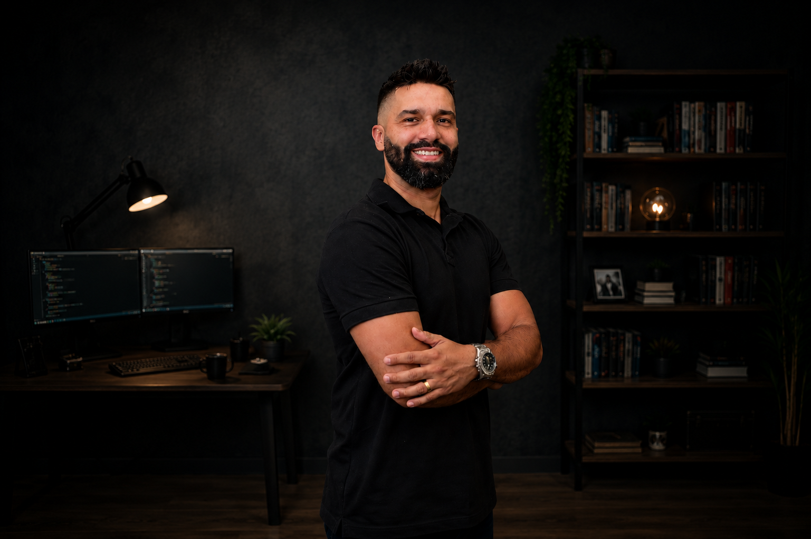

Olá, eu sou
Web Developer and UX/UI Designer
Desenvolvedor Front-end em transição de carreira, apaixonado por tecnologia e pela criação de interfaces modernas, funcionais e responsivas. Utilizo React, TypeScript, JavaScript e ferramentas de IA para transformar ideias em experiências digitais.
Download CVSobre Mim
Perfil Profissional – Tudo sobre mim

Eu sou o Anderson
Sou Desenvolvedor Front-end em transição de
carreira, com experiência
prática no desenvolvimento de aplicações web utilizando HTML, CSS, JavaScript, React
e TypeScript.
Desde 2025 estudo e desenvolvo projetos práticos explorando desde JavaScript puro e APIs até aplicações com React, TypeScript, bancos de
dados e serviços externos.
Atualmente, estou desenvolvendo um SaaS para gestão de Segurança e Saúde do
Trabalho, unindo
React, TypeScript, Supabase, APIs e Inteligência Artificial à minha experiência de mais de
17 anos na área de SST.
Também utilizo ChatGPT, Antigravity (Gemini CLI), Lovable, v0 e GitHub Copilot como
ferramentas integradas ao meu processo de desenvolvimento, apoiando prototipação,
aprendizado, debugging, refatoração e produtividade — sempre buscando compreender, validar e
aprimorar o código.
Data de Nascimento: 19 Fev 1987
Cidade: São Vicente, Brasil
Idiomas: Espanhol e Inglês (Básico)
Nacionalidade: Brasileira
Contato: (13)98132-5597
Cidadania: Portuguesa (União Europeia)
E-mail:aisidoroads@gmail.com
Minhas Especialidades
Tecnologias e soluções que utilizo no desenvolvimento de aplicações web
-
Front-end
Interfaces modernas e responsivas utilizando HTML, CSS, JavaScript, React e TypeScript.
-
React & TypeScript
Aplicações escaláveis com componentes reutilizáveis, organização de código e boas práticas (em aprendizado).
-
UI/UX Design
Desenvolvimento de interfaces intuitivas, com foco em usabilidade, hierarquia visual e experiência do usuário.
-
APIs & Dados
Integração de aplicações com APIs, bancos de dados e serviços externos.
-
Inteligência Artificial
Uso estratégico de IA para prototipação, desenvolvimento, debugging e evolução de aplicações web.
-
Deploy & Produção
Publicação e manutenção de aplicações utilizando Git, GitHub, Vercel e outras ferramentas modernas.
Resumo
Um resumo da minha formação, experiência e principais conquistas profissionais.
EXPERIÊNCIAS
FORMAÇÃO
Meus Projetos
Veja meus trabalhos – Uma seleção de projetos que desenvolvi.
- Todos
- Concluídos
- Em andamento
Entre em contato
Fique à vontade para entrar em contato comigo